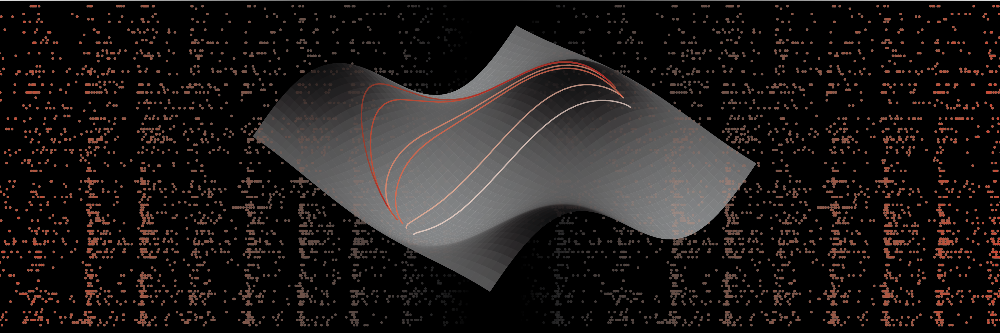
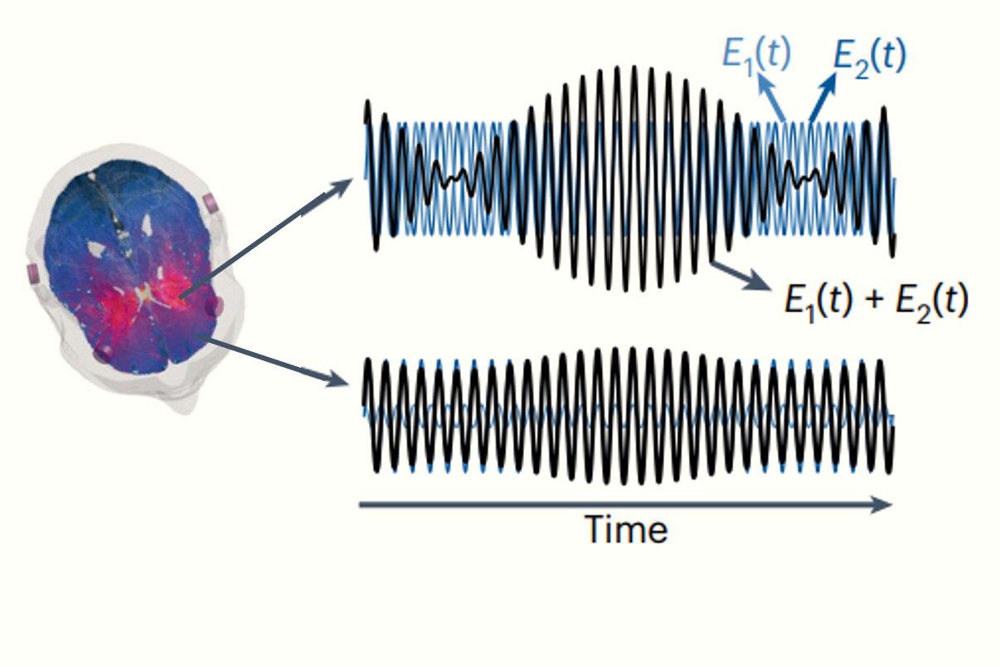
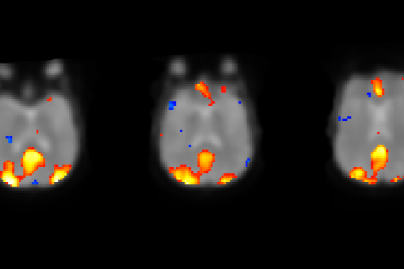
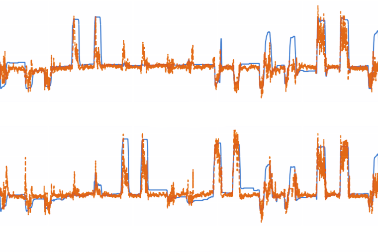
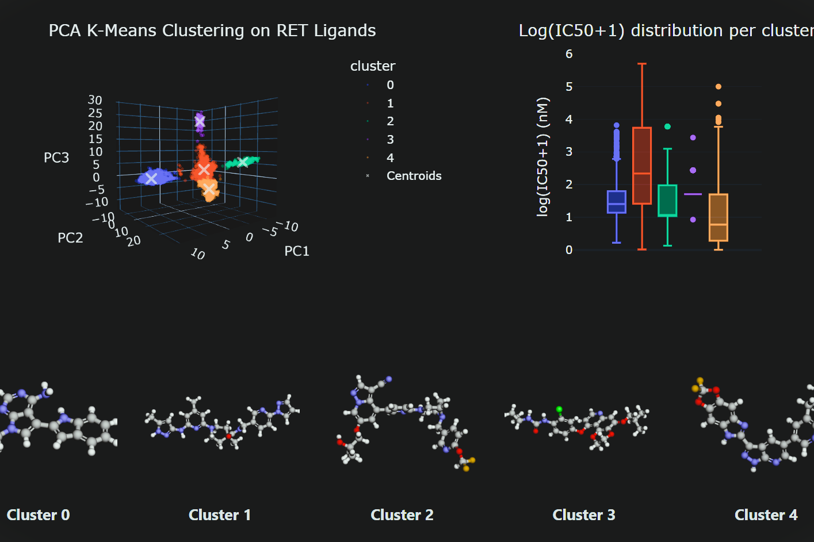
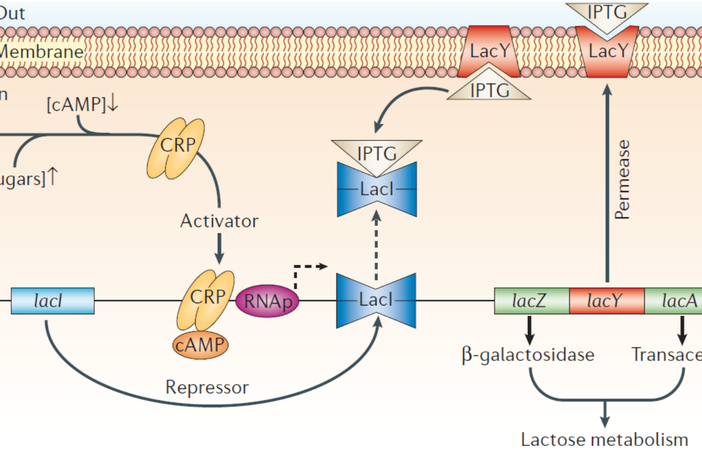
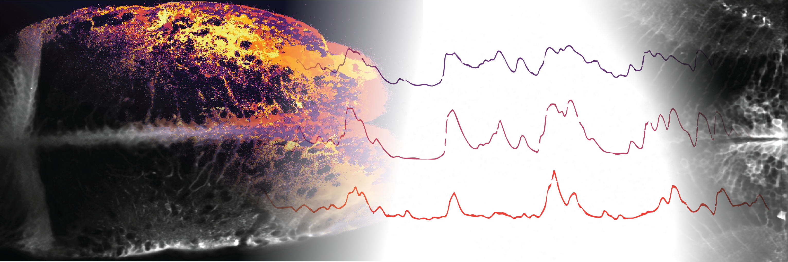
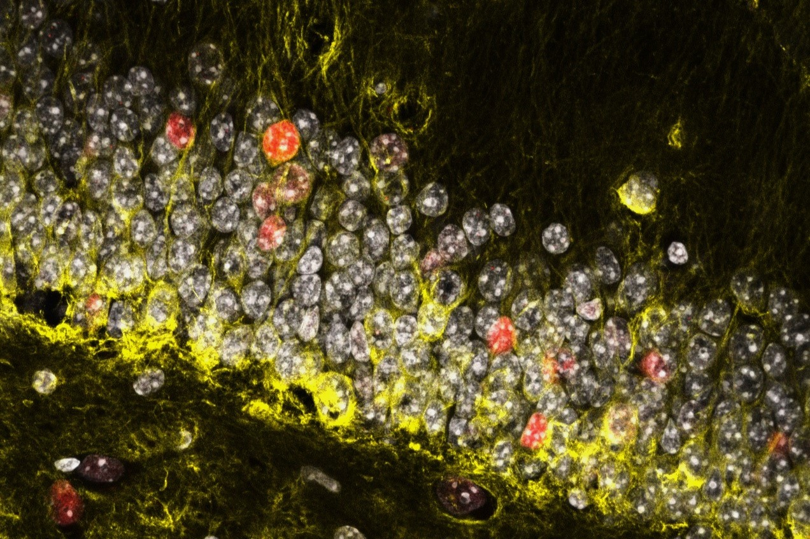
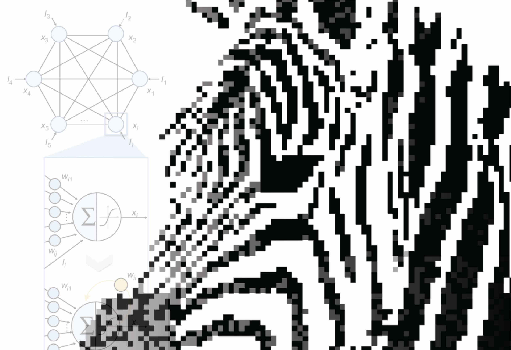

MSc thesis investigating how functional network dynamics develop in human cortical organoids,
lab-grown brain tissue that reliably reproduces key aspects of the cerebral cortex.
As an engineer in a team of biologists, I took full scientific ownership of the data flow, building a reproducible
analysis workflow from the ground up in a completely novel experimental system. Additionally co-led a collaboration with a
machine learning for medicine laboratory.
The emergence and maturation of circuit activity across developmental stages was
characterised using 3D multi-electrode arrays, identifying low-dimensional signatures of
neuropsychiatric disorders based on single-unit activity.
The project spanned machine learning, recurrent activity pattern detection, dynamical systems theory, and
computational modelling of neural dynamics.
Nominated for the best Master's Thesis in Life Sciences Engineering at EPFL in 2026.

Non-invasive brain stimulation software with a graphical user interface, supporting multiple stimulation protocols and compatible with National Instruments DAQ systems. It operates in two modes: (i) a development mode allowing modulation of stimulation parameters, real-time parameter updates and modelling of the interefence pattern; and (ii) a blind mode supporting double-blind, sham-controlled stimulation, loading pre-defined parameters per participant.
More
Analysis and processing of fMRI data during music-listening tasks, including preprocessing, GLM analysis and decoding of music features from brain activity.
A seperate interactive tool was developed for education purposes, allowing users to explore the relationship between k-space sampling and resulting image quality.

Analysis and processing of EMG signals for the prediction of hand movements.
Hand movements predicted ranged from gross movementes (e.g. hand opening vs closing)
to individual joint angle predictions; multiple models were developed, evaluated and compared.

Detailed biochemical data analysis of ligand-protein interactions. Top 10 project in the 600+ student CS-401 course at EPFL.
A detailed, interactive website was developed to present the results of the analysis,
exploring targeted diseases, protein classes, drug properties as well as exploring the main research institutions and companies in the field over time; with case studies in cancer and neurodegeneration.

Modeling of the dynamical systems created by genetic networks, with a focus on the bacterial lac operon.
The model is grounded in dynamical systems theory and machine learning, and explores the system's behaviour.
This includes stability, steady states, reaction to perturbations, bifurcation diagrams, and parameter estimation from noise-corrupted data.

BSc thesis investigating how astroglial network dynamics control neural excitability in epilepsy zebrafish models.
Developed and maintained two seperate analysis pipelines for (i) investigating connectivity across entire astroglial networks,
and (ii) understanding calcium event propagation across single cells.
Network dynamics were recorded by 2-photon microscopy during exposition to seizure-inducing stimuli.
The project spanned signal processing, cell segmentation and machine learning, both on whole-brain and single-cell activity.

Memories are not static, they can be silenced. Supported research on how epigenetic editing of engram cells can be used to extinguish fear memories in rodent models, with ultimate applications in PTSD and anxiety disorders.
Designed and tested gene constructs for memory extinction in rodent models (cell culture, viral transfections, qRT-PCR, ...).

Implementation of various Hopfield Network models for the reconstruction of degraded data and images.
Spanning computational neuroscience, machine learnine, dynamical systems theory. Top 10 project in the 150+ BIO-210 (Applied software engineering for life sciences) course at EPFL.